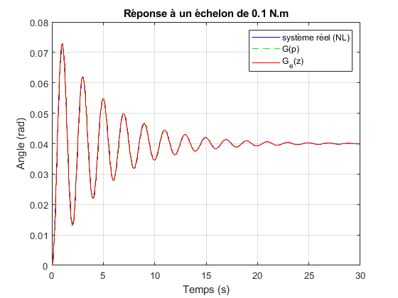
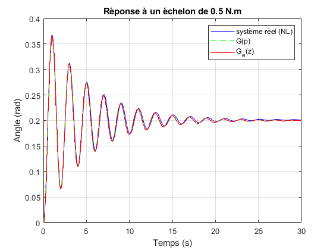
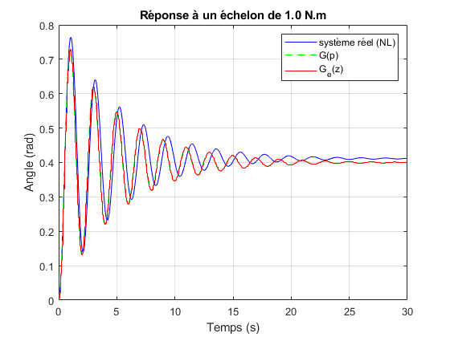
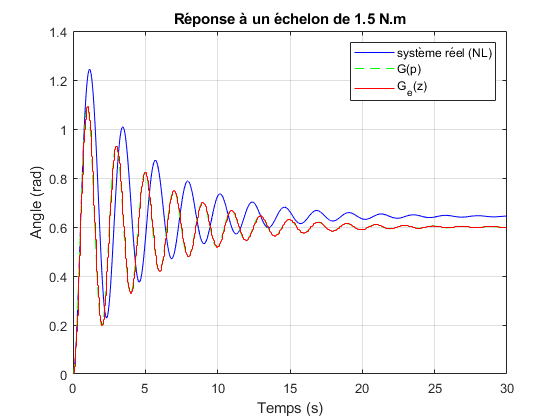
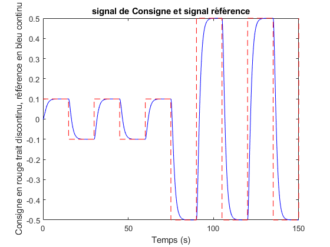
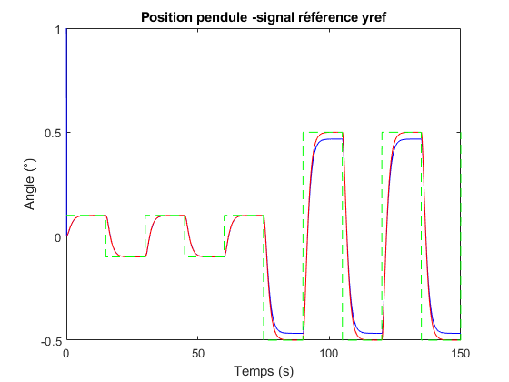
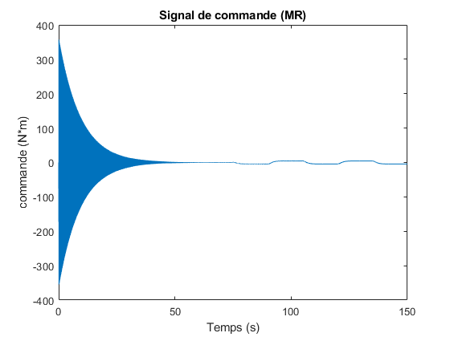
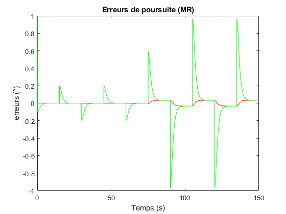

Contents
- Paramètres du système
- Période d'échantillonnage et Pas de calcul de la méthode de RK
- Paramètres de simulation
- Fonction utilisée dans la simulation du pendule
- Initialisations des signaux du régulateur et vecteurs/matrices de sauvegarde
- Début de calcul et discrétisation de la fonction de transfert (unité temps horloge = Te)
- Tâche 6 : réponse à un échelon du système réel, de G(p) et de Ge(z)
- Formulation des performances désirées
- Définition du modèle de référence
- Synthèse de régulateur à Modèle de Référence
- Début de la boucle de commande à MR (unité temps horloge = Te)
- Acquisition de la mesure de sortie
% Script de simulation du système pendulaire clear all; close all; clc;
Paramètres du système
m0 = 0.25; % masse (kg) r = 1; % longueur du bras (m) K = 0.1; % coefficient de frottement visqueux g = 10; % gravité (m/s²) J = m0*(r^2); % moment d'inertie
Période d'échantillonnage et Pas de calcul de la méthode de RK
Te = 0.05; % période d'échantillonnage Tc = 0.01; % Pas de calcul m=Te/Tc;
Paramètres de simulation
t = 0:Te:3000*Te; % grille de temps de simulation (s) n=length(t); % durée de simulation avec Tc comme unité de temps
Fonction utilisée dans la simulation du pendule
f = @(x, u,m0) [x(2); (u - K*x(2) - m0*g*r*sin(x(1)))/J];
Initialisations des signaux du régulateur et vecteurs/matrices de sauvegarde
theta0=1; thetadot0=-1; x=[theta0 thetadot0]'; % initialisation du vecteur d'état [position, vitesse]' y=x(1); % y(0)=theta(0) y1=1; % y1 denote y(k-1) X=x; % X matrice desauvegarde des valeurs de x(k) à différents instants k u = 0; % u commande à l'instant présent k en boucle fermée u1=0; % u1 commande à l'instant présent k-1 U=u; % Sauvegarde des valeurs de la commande u(k) I=0; % integrale de u(k) Y=[y]; % sauvegarde des sorties antérieures
Début de calcul et discrétisation de la fonction de transfert (unité temps horloge = Te)
coefficient fonction de transfert
a1c=K/(m0*(r^2)); a0c=g/r; b0c=1/(m0*(r^2)); G=tf(b0c,[1 a1c a0c]); disp('FT continue G(p)=') G % Fonctions de transfert échantillonnée du système Ge=c2d(G,Te,"zoh"); disp('FT échantillonnée Ge(z)=') Ge
FT continue G(p)=
G =
4
----------------
s^2 + 0.4 s + 10
Continuous-time transfer function.
FT échantillonnée Ge(z)=
Ge =
0.004957 z + 0.004924
----------------------
z^2 - 1.955 z + 0.9802
Sample time: 0.05 seconds
Discrete-time transfer function.
Tâche 6 : réponse à un échelon du système réel, de G(p) et de Ge(z)
ts = 0:Te:600*Te; % 30 s suffisent Amplitudes=[0.1 0.5 1 1.5]; for j=1:length(Amplitudes) A=Amplitudes(j); % système réel (non linéaire) simulé par Runge-Kutta xs=[0 0]'; Ys=xs(1); for kk=1:length(ts)-1 for i = 1:m x1s=xs+Tc*f(xs,A,m0); xs = xs+(Tc/2)*( f(x1s,A,m0) + f(xs,A,m0) ); end Ys=[Ys xs(1)]; end figure(10+j) plot(ts,Ys,'b-', ts,A*step(G,ts),'g--'); hold on; stairs(ts,A*step(Ge,ts),'r-'); title(sprintf('Réponse à un échelon de %.1f N.m', A)); xlabel('Temps (s)'); ylabel('Angle (rad)'); legend('système réel (NL)','G(p)','G_e(z)'); grid on; end % poles et zéros de G(p) et Ge(z) disp('poles de G(p)=') polesc=pole(G) disp('poles de Ge(z)=') polesd=pole(Ge) disp('zéros de Ge(z)=') zerosd=zero(Ge) % disp('zéros de G(p)=') zero(G) disp('exp(Te*poles de G(p))=') exp(polesc*Te) % % Création de A(q^-1) et B(q^-1) tel que Ge(z)=(z^-d)*B(z^-1)/A(z^-1) % Ici d=1 % Récupération des coefficients B(z^-1) et A(z^-1) B=Ge.num{1}; A=Ge.den{1}; b0=B(2); b1=B(3); a0=A(1); a1=A(2); a2=A(3); disp('B(q^-1)=') B=tf([b0 b1],[1 0],Te,'variable','q^-1') disp('A(q^-1)=') A=tf([a0 a1 a2],[1 0],Te,'variable','q^-1')
poles de G(p)= polesc = -0.2000 + 3.1559i -0.2000 - 3.1559i poles de Ge(z)= polesd = 0.9777 + 0.1556i 0.9777 - 0.1556i zéros de Ge(z)= zerosd = -0.9934 zéros de G(p)= ans = 0×1 empty double column vector exp(Te*poles de G(p))= ans = 0.9777 + 0.1556i 0.9777 - 0.1556i B(q^-1)= B = 0.004957 + 0.004924 q^-1 Sample time: 0.05 seconds Discrete-time transfer function. A(q^-1)= A = 1 - 1.955 q^-1 + 0.9802 q^-2 Sample time: 0.05 seconds Discrete-time transfer function.




Formulation des performances désirées
Définition du modèle de référence
xi=1; % coefficient d'amortissement w0=1; % pulsation propre disp('Modèle de référence continu Gm(p)=') Gm=tf(1, [1/w0^2 2*xi/w0 1]) disp('Modèle de référence discret Gme(z)=') Gme=c2d(Gm,Te,"zoh") % signal de consigne A0=0.1; % amplitude de départ de la consigne %consigne= @(t) 0.1 * (t >= 0); % Échelon de consigne A0 (N.m) consigne = @(t) A0 * (mod(t, 30) < 15); % Consigne carrée: A0 N.m pendant 1s, 0 pendant 1s % Définition du signal de référence %disp('Signal de référence yref') Consigne=[]; Yref=[]; % sauvegarde signal référence y=theta0; % initialisation sortie e=[y-0 y-0]'; % erreurs de poursuite initiales E=[e]; % sauvegarde erreurs de poursuite % changement de gain d'amplification à mi-parcours de la consigne A1=1; % gain d'amplification de la consigne n1=n/2; % instant de changement de l'amplitude de la consigne. for k=1:n consigne_k=A1*( 2*consigne(t(k)) -A0 ); Consigne=[Consigne consigne_k]; % changement d'amplitude de la consigne if k==floor(n1) A1=5; end end Yref=lsim(Gme,Consigne,t); figure(1) plot(t,Yref,'b-',t,Consigne,'r--'); title('signal de Consigne et signal référence'); xlabel('Temps (s)'); ylabel('Consigne en rouge trait discontinu, référence en bleu continu'); % Création du polynôme C(q^-1)=1+c*q^-1 disp('Polynomial C(z^-1)=') c=0; C=tf([1 c],[1 0],Te);
Modèle de référence continu Gm(p)=
Gm =
1
-------------
s^2 + 2 s + 1
Continuous-time transfer function.
Modèle de référence discret Gme(z)=
Gme =
0.001209 z + 0.001169
----------------------
z^2 - 1.902 z + 0.9048
Sample time: 0.05 seconds
Discrete-time transfer function.
Polynomial C(z^-1)=

Synthèse de régulateur à Modèle de Référence
Calcul des coefficients des polynômes R(q^-1) et S(q^-1) solution de A*R+(q^-1)S=C
R=1;
s0=c-a1; s1=-a2;
% Loi de commande R*B*u(t)+S*y(t)=C*yref(t+d)
Début de la boucle de commande à MR (unité temps horloge = Te)
Acquisition de la mesure de sortie
Résolution de l'équation différentielle du pendule par la méthode de Runge-Kutta d'ordre 2 (méthode de Heun) pas de calcul=Tc
% instant de changement de masse et/ou de l'amplitude de la consigne n1=n/2; for k=1:n-1 y1=y; % sauvegarde de y(k-1) u1=u; % sauvegarde de u(k-1) for i = 1:m x1=x+Tc*f(x,u1,m0); x = x+(Tc/2)*( f(x1,u,m0) + f(x,u1,m0) ); end y=x(1); % sauvegarde de y(k) e=[y-Yref(k) y-Consigne(k)]'; % calcul des erreurs de poursuite u=( -b1*u1 - s0*y - s1*y1 + Yref(k+1) + c*Yref(k) )/b0; % calcul de u(k) X =[X x]; Y=[Y y]; U=[U u]; E=[E e]; % % Changement de la valeur de la masse du système (sans toucher au régulateur) if k==floor(n1) m0=1; end end % %% Affichage des résultats figure (2) plot(t,Y,'b-', t,Yref,'r-',t, Consigne,'g--'); title('Position pendule -signal référence yref'); xlabel('Temps (s)'); ylabel('Angle (°)'); hold on; figure (3) plot(t,U); title('Signal de commande (MR)'); xlabel('Temps (s)'); ylabel('commande (N*m)'); hold on; figure (4) plot(t,E(1,:),'r-',t,E(2,:),'g-'); title('Erreurs de poursuite (MR)'); xlabel('Temps (s)'); ylabel('erreurs (°)');


